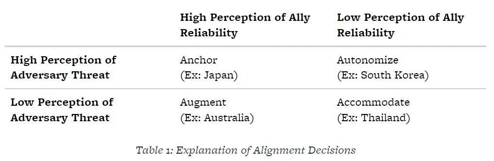
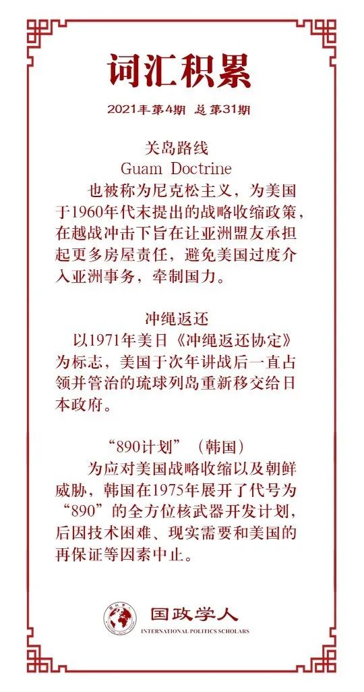

收录于合集

作品简介
【作者】 林赛·福特（Lindsey Ford）曾任布鲁金斯学会David M. Rubenstein外交政策研究员，现任美国国防部副助理国防部长一职。她的研究兴趣集中于美国在亚太地区的国防战略，包括美国的地区联盟、军事实力、以及地区安全结构。
扎克·库珀（Zack Cooper）是美国企业研究所（American Enterprise Institute）研究员。他的研究兴趣集中于美国的亚洲战略，包括联盟政治和中美关系。
【编译】 徐一凡（国政学人编译员，立命馆大学国际关系学院）
【校对】 戎秦婴
【审核】 戴赟
【排版】 韩柯
【美编】 马颖
【来源】 Ford, Lindsey, & Zack Copper. “America’s Alliances after Trump: Lessons from the Summer of ‘69” Texas National Security Review , vol. 4, no. 2, 2021, online.
【归档】 《国际关系前沿》2021年第4期，总第31期。
期刊简介
《得克萨斯国家安全评论》（ Texas National Security Review ），由得克萨斯大学成立于2017年，致力于连结学术界与政策界。虽然创刊不久，但已经发表了多篇知名学者与政策制定者的高水平论文。
特朗普之后的美国同盟：尼克松关岛路线的经验教训 ****
America’s Alliances after Trump: Lessons from the Summer of ‘69
林赛·福特（Lindsey Ford）
扎克·库珀（Zack Cooper）
内容提要
尼克松在1969年提出“关岛路线”后，美国的亚洲盟友对其战略可靠性的态度出现了不同转变，并基于此采取了不同的战略。如果拜登政府希望加强同盟关系并避免尼克松在同盟问题上犯的错误，那么其第一要务就是要恢复对美国的战略可靠性的信心。
文章导读
01
导读
在拜登取得2020年美国总统大选胜利后，盟友们就开始积极寻求翻过特朗普四年执政期混乱同盟关系的一页，开启新的篇章。不同于特朗普常常抱怨同盟关系“不公平”，拜登多次表示与盟友间的紧密合作是他对外政策的基石。但一个重要问题是： 美国的同盟关系是会简单地回到前特朗普时代，还是会有一个根本性的转变呢？ 虽然现在下定论还为时尚早，但尼克松总统1969年提出的关岛路线却对当下拜登政府重铸美国同盟体系的政策有着重要的借鉴意义。本文认为，特朗普时期美国由于战略过度扩张而要求盟友承担更大“负担分担”（burden sharing）造成的影响与尼克松的关岛路线如出一辙，即会动摇盟国对美国的信心。除了“锚定”（anchoring）美国，地区盟友还会采取多种其他战略，如“扩张”（argumenting）、“自主”（autonomizing）和“容纳”（accommodating），或是这些战略的组合。盟友会采取哪种战略主要取决于其对美国可靠性的认知和其面临威胁的严重程度。因此， 如果拜登想要加强美国的同盟关系，其第一要务就是要恢复美国的战略可靠性。
02
关岛路线的回响
1969年7月25日，尼克松在关岛发表了题为“美国在亚洲的角色”的演讲。尼克松表示 美国的亚洲盟友们需要承担更多的防务责任 ，而非仅仅搭美国的便车。他相信美国在全球，特别是亚洲已经过度扩张了，占用了大量宝贵的国家资源。他认为美国过于偏执于像越南战争这样的边缘问题了，更加重要的问题反而没有得到重视。
尽管尼克松保证美国仍然会继续作为一个太平洋大国存在，但很显然其在很大程度上将与以往大不相同。其中，最令人瞩目的就是尼克松对中国的接触以及南越政权的最终倒台。其结果是，其他亚洲盟友开始迅速重新思考对美国的依赖。不仅如此，美国还计划在亚洲大规模撤军，寻求对苏联的缓和，并减少对其他亚洲国家（地区）的安全承诺。这让区域内其他国家担心会成为美国的弃子。
这些国家对关岛路线的回应则开启了一幕意味深远的合纵连横。在70年代， 亚洲变得越来越多极化 ，区域内的结盟也变得越来越没有章法。中小国家不得不面对更不确定的地区均势，以及美国作为安全保障者的日子一去不返的事实。尽管尼克松于1974年下台，但他的“动态稳定”理论仍在接下来的半个世纪影响着地区局势。因此，关岛路线的回响可以对今天的局势有着不小的借鉴意义。
03
结盟的逻辑
对处在不对称同盟之中的国家来说，有以下四种应对关岛路线的对策。当然，这四种战略都只是理想型（ideal type），实际上各国往往针对自身的安全形势采取不同战略的组合。
锚定（anchoring）：一国可以继续依靠现有的同盟，并与盟友更加紧密地合作。通过条约、军事基地、联合作战（演习）、军售等方式，向同盟国发出强化现有同盟的信号。如此，该国就可以加强与盟友的关系，提升共同威慑和防卫能力。
扩张（argumenting）：除正式联盟外，各国也可以通过深化非正式关系来建立更强的地区安全网络。此种“基于共同体的安全秩序”（community- based security order）的目标是，通过将大国卷入多边安全体系来牵制其实力，并由此维持现状。
自主（autonomizing）：一国也可以投入更多国防建设（比如核武器）以谋求自主的防卫力量。事实上，自主战略就是通过提高军事开支达到“内部制衡”（internal balancing），而非依靠盟友（同时牺牲自主）的“外部制衡”（external balancing）。
容纳（accommodating）：一国可以通过拥抱威胁来源国来避免对自身实力或外部支持的依赖。在大部分情况下，容纳战略是锚定战略的相反面，即与威胁来源国结盟而非对抗。
结盟战略的选择基于两个变量：对威胁的认知和对盟友可靠性的认知。 高威胁认知往往导致锚定或自主战略 ，因为当面临重大威胁时，一国往往希望有可靠的威慑手段。而这只能通过正式条约同盟或者足够的自主防卫能力来获得。 低威胁认知则会促使一国选择扩张或者容纳战略 ，因为这两种战略的花销比较少，而且也不会丧失战略自主性。同时， 如果一国认为盟友高度可靠，那其就倾向于采取锚定或者扩张战略；如果盟友可靠性低，那一国就更倾向于自主或者容纳战略。 这些可以反应在表1上。
表1

04
亚洲国家对关岛路线的回应
未确定以上论述是否符合亚洲国家对关岛路线的回应，接下来本文将着重考察日本、韩国、澳大利亚和泰国这四个代表性的美国亚洲盟友在尼克松提出关岛路线后的结盟政策调整。
日本：选择锚定战略的盟友
日本对关岛路线的回应对美国来说是最为有利的。某种意义上讲，关岛路线其实正中日本下怀。尼克松要求时任日本首相佐藤荣作承担更多的亚洲防务责任事实上受到了很多日本人的欢迎。因为这实际上 有利于战后日本的政治军事正常化，同时还能减少美国对日本的筹码。 1971年的《冲绳返还协定》即是一例，虽然美国撤走了部分冲绳的驻军，但日本也得以重新管制冲绳，自卫队的实力也因此有所提升。同时，与其他美国亚洲盟友不同的是，日本不必过分担心会被美国当成弃子。 由于苏联威胁的存在，美国不得不依靠日本作为遏制苏联的桥头堡。 换言之，日本是美国不可能放弃的阵地。
因此，尽管面临关岛路线带来的不确定性，日本还是选择锚定美国。一方面，日本认为苏联对其安全构成极大威胁（高威胁认知）。另一方面，由于美国有效的再保证承诺(reassurance），日本对美国的安全承诺有高度信心（高可靠性）。两方面原因结合就使得日本最终采取了对美锚定战略。
韩国：选择自主战略的盟友
韩国更多选择自主战略以应对关岛路线。 韩国追求独立的防卫能力很大程度上是因为缺乏对美国安全承诺的信任。 美韩同盟脱胎于朝鲜战争。韩国起初也采取了锚定美国的战略，希望能借此得到经济和安全上的裨益。但在尼克松发表关岛路线，并撤出大量驻韩美军后，韩国的态度还是发生转换。韩国总统朴正熙首先寻求的是“容纳”战略，积极寻求与威胁来源国朝鲜改善双边关系。但由于始终在半岛统一问题上无法达成一致，“容纳”战略宣告失败。
随后，韩国转而寻求加强自身军事力量以达到威慑和防卫的目的。其中最值一提的就是代号“890项目”的核武器开发项目，试图通过获得核武器以取得独立的对朝威慑能力。韩国在1974年就已经获得了核武器所需钚的生产能力，并在1975年全面开展包括导弹、核弹头和化学武器在内的武器开发项目。这些计划最终在美国明确保证对韩国的安全承诺后才被作罢。在这之后，韩国也经常以发展自身军备为要挟试图改变美国的政策。
韩国最终因为两方面原因选择了自主战略，即来自朝鲜的巨大威胁和盟友美国的不可靠。对于日本的头号威胁苏联，美国也展现出巨大的顾虑；但美国却明显对韩国的最大威胁朝鲜没那么感兴趣。韩国必须寻求他法，不依靠美国处理朝鲜问题。因此，在70年代早期的容纳战略失败后，韩国随即选择了自主战略。
澳大利亚：选择扩张战略的盟友
澳大利亚对关岛路线的回应与日韩很不同。 这主要是因为对于澳大利亚来说并没有迫切的安全威胁。 关岛路线的提出，特别是澳大利亚对中国的接近使得澳改变一贯的依赖单一强国的对外战略，在结盟问题上重新作出评估。一方面，澳大利亚认为其安全环境相对稳定，没有迫切的威胁。另一方面，澳大利亚认为美国会继续在真正紧迫威胁面前保护澳大利亚，履行其安全承诺。
因此，澳大利亚选择了相对稳定的“扩张”战略，除与美国外继续保持紧密关系外，同时加强与其他亚洲国家的关系。1973年，时任澳大利亚总理惠特拉姆认为，亚洲地区主义将是澳大利亚对外政策的关键。在缺少直接威胁并且有强力盟友的情况下，澳大利亚的政策更为灵活，同时与多个地区国家建立了紧密联系，包括日本、印度和东南亚国家联盟等。除此之外，澳大利亚还积极与中国接触，进一步降低外部安全威胁。
泰国：选择容纳战略的盟友
容纳共产党执政的国家可能是美国最为顾虑的一种情形。关岛路线之后的泰国的应对即是其中一例。尼克松上台后，美国开始逐渐从东南亚收缩。行政部门与立法部门间的龃龉更是为尼克松时期本就不明朗的美泰关系蒙上阴影。泰国一直是东南亚最坚定的反共国家之一，也一直在安全上受到美国的大力支持。而在关岛路线的冲击下，美国对泰国的经济和军事支持逐日减少，这迫使泰国不得不另寻一个强有力的伙伴。
其中最引人注目的是泰国对中国的（再）接近。 虽然泰国一贯奉行反共政策，但亚洲的权力动态还是将中泰两国推到一起。美国的撤出让泰国确实感到了不安，但却也没有什么真正的紧迫威胁。 在此情况下，即便与共产党执政的国家有所接触也并不会对泰国的安全造成严重伤害。因此，在1970年代，泰国开始有意减少对中国的敌对宣传并寻求与中国的伙伴关系。中国也乐于在东南亚多一个战略伙伴，开始逐渐减少对泰国共产主义活动的援助。而泰国也投桃报李，在中越边境战争中支持中国。泰国虽然担忧盟友可能并不可靠，却也没有什么安全攸关的威胁，因此其愿意对中国采取容纳战略。
05
结论：关岛路线的 教训
特朗普的“美国第一”政策与尼克松的关岛路线有着许多相似之处， 本质上都是要求盟友承担更多防务责任。 两个时期的亚洲盟友也面临着类似的结盟抉择，即锚定、扩张、自主和容纳。因此，关岛路线的历史可以为今天提供许多有借鉴意义的教训。
第一，威胁从亚洲收缩（disengagement）会加速亚洲国家的对冲选择。在关岛路线之前，亚洲盟友大多对美国高度依赖。一旦美国表示希望从亚洲有所收缩，盟友们就会不可避免地不同程度上寻求对冲，寻找其他威慑与防卫的手段，从而降低美国的影响力。
第二，见风使舵的政策会伤害同盟的基础。尼克松做出从亚洲收缩的决定很大程度上源于财政困难，美国无力负担过多的海外安全责任。这也是尼克松决定使美元与金价脱钩的原因。但这些政策除了在安全上，还在经济上破坏了同盟的基础，使得关岛路线对同盟造成的伤害更加不可逆转。长远来看，如果想要盟友锚定自己，美国需要更加关注同盟的经济基础。
第三，长久的政策需要国会支持。这在泰国问题上体现的非常明显。只有总统能得到的国会的支持时，盟友才会相信其承诺能够兑现，因此能够提升美国在盟友眼中的可靠性。特朗普政府就经常被批评因为没有足够的国会支持而无法实施既定的亚洲政策。
第四，结构性因素推动结盟局势。无疑，当今的局势相较于1970年代已经发生了巨变。但是我们仍然能观察到与半世纪前结盟形势的惊人相似。在特朗普的“美国第一”冲击下，日本、韩国、澳大利亚和泰国仍然基本采取了关岛路线冲击下相同的（再）结盟战略。这并非巧合，而是有结构性因素作为支撑。东北亚的日、韩两国对威胁的认知远高于千里之外的澳、泰两国。日本和澳大利亚一直都是美国重要的海外基地东道国，也在美国的大战略中扮演更重要的角色，因此相较其他两国对于被美国抛弃有更小的顾虑。可以说，是结构性的相似性驱使美国的亚洲盟友采取与当年相似的战略。
总的来说，正如半世纪前一样，美国的亚洲盟友正在考虑除锚定之外的其他战略。而关岛路线的教训则可以帮助美国避免重蹈相同的覆辙。历史经验证明，如果美国能够更好地利用其优势，盟友们会对美国更有信心，并且更加愿意分担更多的责任。
译者评述
本文精准的抓住了“美国第一”和“关岛路线”的一个结构性相似性，即（昔日）安全提供者的战略收缩。在此基础上，作者分析了（昔日）安全提供者的盟友会如何应对。
安全提供者的首要考量仍然是本国安全利益，而其国力衰退则是判断其本国安全利益之所在的试金石。当美国在国力鼎盛时，可以做出超出本国安全利益的安全承诺；而在国力衰退时，就更有可能抛弃对本国无益的安全负担（如对韩国和泰国）。值得注意的是，安全提供者是否收回安全承诺与盟友面对的威胁强弱无关。即便韩国面临来自朝鲜的实在威胁，美国依然撤出了大量驻韩美军。因此，处于同盟弱势一方的国家要时刻注意，盟友是因为国力溢出才提供安全承诺，还是因为自己本身就是其安全利益的重要一环才会提供安全承诺。如若是前者，就不得不对安全提供者可能的战略收缩做出预案。
盟国是否会继续追随安全提供者并不取决于威胁来源国的大小，而是取决于原盟友的战略可靠性。安全提供者的国力越盛，越有可能不加鉴别地做出安全承诺，其可靠性就越高。反之，如果安全提供者被迫战略收缩，那么盟国就不得不考虑（并怀疑）自己是不是安全提供者地首要安全利益所在，而安全提供者地可靠性就会在盟友严重降低。
这一点对中美竞斗和中国的对外战略有重要借鉴意义。具体来说，在美国国力仍然强盛之时，无论中国如何做出单方面善举，都不能有效拉拢美国盟友。原因很简单，在能够确认头号强国的安全承诺的情况下，没有必要改变当下的结盟政策。在美国国力衰弱并采取战略收缩时，尽管释放善意（降低他国对中国的威胁认知）能够更有可能使他国采取对中国的“容纳”政策，但需要注意这也是要建立在他国相信美国不再做出安全承诺的基础上的。
中日关系就分别体现了上述结构性因素是如何从体系层面推动（限制）双边关系发展的。2012年建立的第二次安倍内阁在奥巴马政府亚太再平衡战略下屡屡与中国寻求摩擦，在领土问题上的对立尤为明显。但是，当特朗普政府上台抛出“美国第一”之后，尤其是日本在朝核危机（日本的首要安全威胁之一）上对美国大失所望后，安倍内阁的对华态度大幅回暖，不但实现了总理互访，还要请中国国家领导人与2020年对日进行国事访问（因疫情最终未能成行）。但在履新的拜登政府表示对盟友的再保证后，日本对华态度再次发生大逆转，甚至在几十年一直与中国保持默契的台湾问题上大做文章。诚然，日本的战略转向与中国的政策改变也不无关系，特别是安倍内阁后期的中日战略默契与菅内阁上台后中国在领土问题上对日的进取态度（如《海警法》）形成鲜明对比，但起主导作用的仍然是美国的亚洲战略。
当然，本文也有其局限性。首先，本文归根结底还是基于美国经验（且跨度仅仅半个世纪），结论的普适性仍需商榷。其次，本文将地缘因素视为一个重要的结构性制约，认为日韩两国面临的高度威胁，以及日本对美国亚洲战略的桥头堡作用均是地理决定的。传统的权力政治中地缘确实起重大作用，但当下权力政治的舞台逐渐向网络空间、高技术、外层空间转移。其中，地缘的重要性势必被削弱。就此两点，如果能对霸权国战略收缩及其盟友的应对进行更广泛的考察（比如前近代的东亚和现代早期的欧洲），并将新的安全领域纳入考量，相信可以对此领域做出新的贡献。
词汇整理

文章观点不代表本平台观点，本平台评译分享的文章均出于专业学习之用, 不以任何盈利为目的，内容主要呈现对原文的介绍，原文内容请通过各高校购买的数据库自行下载。
好好学习，天天“在看”
国政学人
支持学术公益与知识传播
微信扫一扫赞赏作者 __赞赏
已喜欢，对作者说句悄悄话
取消 __
发送给作者
发送
最多40字，当前共字
上一页 1/3 下一页
长按二维码向我转账
支持学术公益与知识传播
受苹果公司新规定影响，微信 iOS 版的赞赏功能被关闭，可通过二维码转账支持公众号。